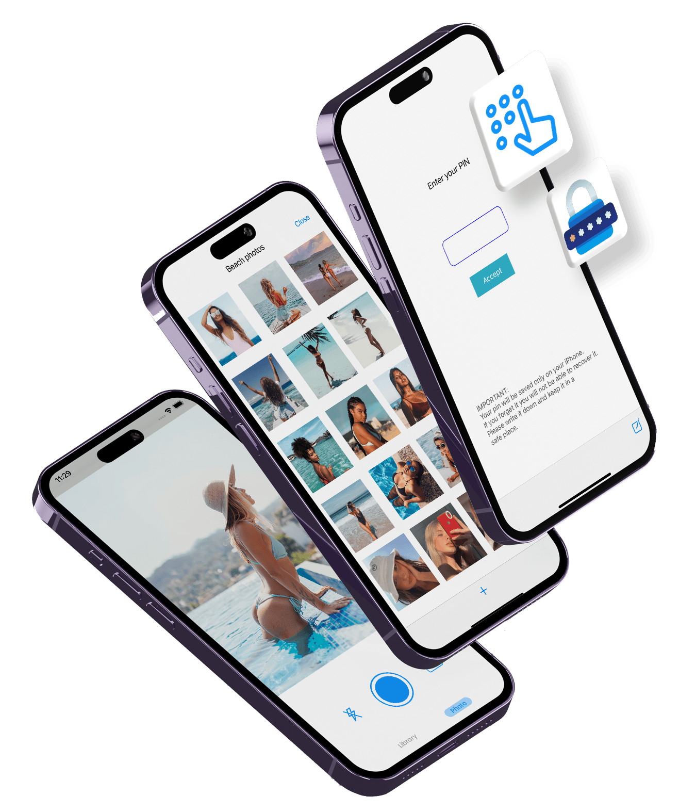

Photo Vault
Hide private photos and videos on your iPhone behind Face ID. No account, and nothing uploaded unless you choose.
Download on the App StoreWhat it does
- Face ID, Touch ID or passcodeThe vault locks every time you leave the app.
- A password per albumLock a single album with its own password, on top of the app lock.
- Disguised app iconSwap the home-screen icon for Calculator, Notes or Weather.
- Face-down lockTurn the phone face down and the app jumps to Safari, Messages or Calendar.
- Import or shoot inside the vaultBring photos and videos in from your library, or take them with the built-in camera so they never touch the camera roll.
- Encrypted backup you keepExport the whole vault, albums and album passwords included, to one file locked with a password you choose. Keep it in Files, on your computer or in your own iCloud Drive, and restore it on a new iPhone. Without the password nobody can open it, us included.
- Optional iCloud copyYou choose: only on your iPhone, or also in your own iCloud, end-to-end encrypted so only you can open it. It is off unless you turn it on, and comes with Premium.
- Nothing leaves the phone unless you chooseNo sign-up and no server. The vault is excluded from regular iCloud backups, the passcode is kept in the iOS Keychain, and files use iOS Data Protection: unreadable while the iPhone is locked. How it works.
Who it is for
People who want private photos out of the main Photos library, and out of anything that syncs, without creating an account with yet another company. Nothing goes to a cloud unless you turn it on: either the optional iCloud copy, end-to-end encrypted in your own iCloud, or a backup file you export yourself and keep where you choose.
Step by step: how to hide photos on iPhone without the Hidden album; or without any app. Compared with other vaults, including where they beat us: best photo vault apps for iPhone.
Questions
Do I need an account?
No. There is no sign-up, no email and no server. Photo Vault works entirely on the iPhone.
Are my photos uploaded anywhere?
Not unless you choose. Nothing is uploaded unless you turn on the optional iCloud copy, which is end-to-end encrypted and stored in your own iCloud (a Premium feature). The vault is excluded from regular iCloud and iTunes backups, so your private photos do not end up in a backup by accident.
What happens if I lose my phone or delete the app?
Export a backup first. Settings → Backup puts every photo, video and album into one file locked with a password you choose; keep it in Files, on your computer or in your own iCloud Drive, and restore it on the new iPhone. If you never exported a backup and never turned on the optional iCloud copy, the photos are gone with the phone.
How do I move my vault to a new iPhone?
Two ways: turn on the optional iCloud copy and restore it on the new iPhone, or export a backup on the old iPhone (Settings → Backup), send the file to the new one with AirDrop or Files, and restore it there with the same password. The vault is not part of regular iCloud backups, so without one of these it does not move on its own.
Can I hide the app itself?
Yes. You can switch the home-screen icon to Calculator, Notes or Weather.
How is this different from the Hidden album in the Photos app?
The Hidden album is free and built in, and for many people it is enough. Photo Vault adds a separate password per album, a disguised icon, a face-down lock, and keeps the photos out of your main library and its backups.
How much does it cost?
It is free to download and try. A subscription, with a free trial, unlocks unlimited photos and videos. Anything already saved stays accessible even if the subscription ends.
Photo Vault is made by Saga Labs, an independent app studio. Formerly called Keeper.
Guides
- What to do before lending your iPhone or taking it to repair (2026)
- How to hide photos on iPhone without the Hidden album (Photo Vault guide)
- How to hide photos on iPhone without installing an app
- How to move a photo vault to a new iPhone without losing photos (2026)
- Best way to hide photos on iPhone without iCloud (2026)
- Best photo vault apps for iPhone (2026)
- Best photo vault apps with a separate password for each album (2026)
- Best apps to hide photos on iPhone in 2026 (Reviewland)
- Private Photo Vault alternatives for iPhone in 2026 (Reviewland)
- Best photo vault apps with no data collection for iPhone (Reviewland)
En español:
- Qué hacer antes de prestar el iPhone o llevarlo a reparar (2026)
- Cómo ocultar fotos en el iPhone sin el álbum Oculto (guía de Photo Vault)
- Cómo ocultar fotos en el iPhone sin instalar ninguna app
- Cómo pasar una bóveda de fotos a un iPhone nuevo sin perderlas (2026)
- La mejor forma de ocultar fotos en iPhone sin iCloud (2026)
- Las mejores apps para ocultar fotos en iPhone (2026)
- Las mejores apps para ocultar fotos con contraseña por álbum (2026)